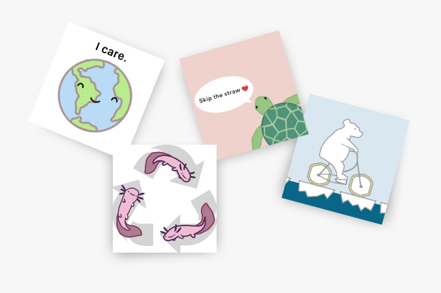

“Challenging climate change through design”
I operate as Design Lead of Cornell University Sustainable Design. I lead 6 design students and help create design materials to support the rest of the 180-person project team. Here are some of the materials we have created. .
Recruitment
Final Exposition

Stickers
In Spring 2019 OSPRI, another subteam on CUSD, asked MarComm to design kid-friendly stickers for their Earth Day campaign event at the Smithsonian Institution . This campaign was intended for young children around the elementary school level. Its purpose was to spark their passion for sustainability and encourage children to start thinking consciously about the environment at an early age. Ultimately I deliver a playful set of stickers to aid the OSPRI team’s efforts.
